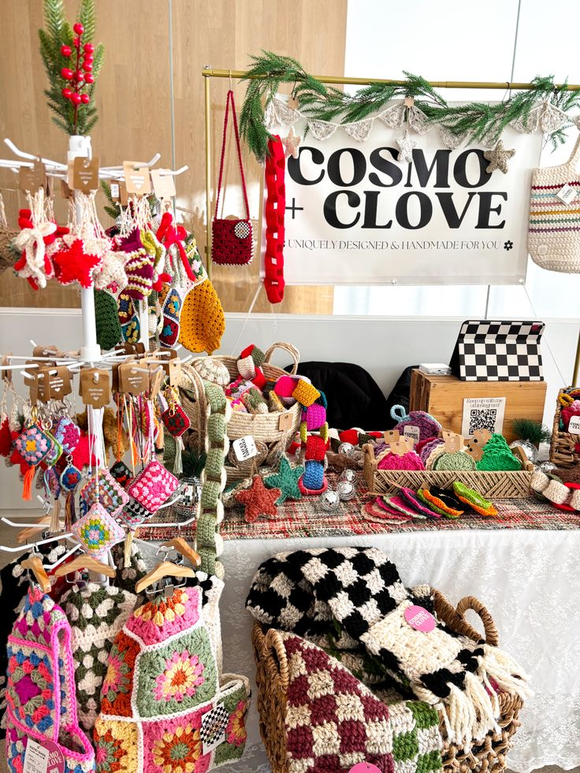
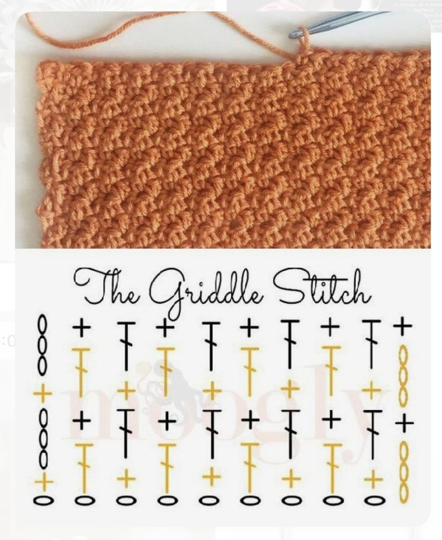
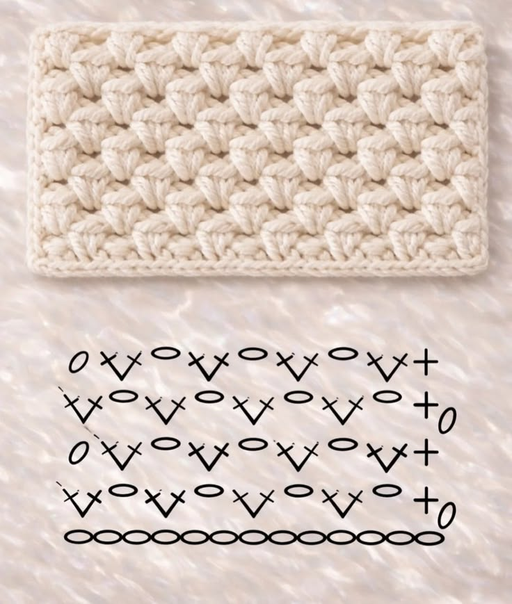
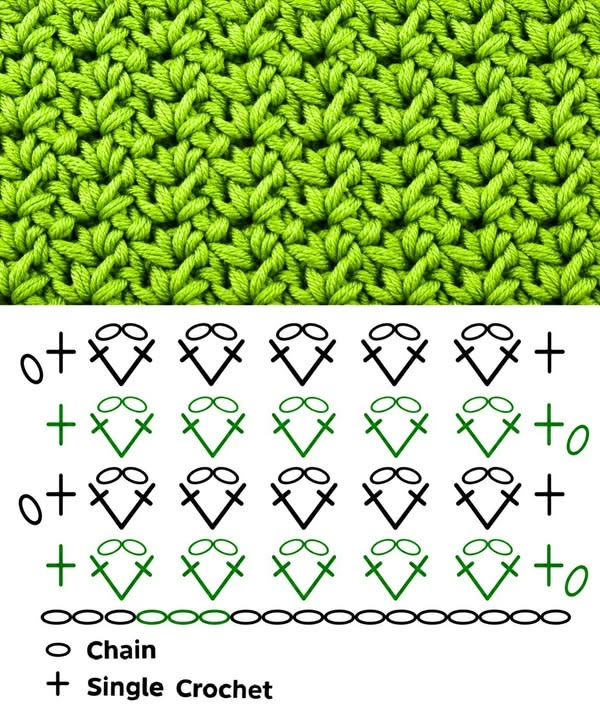
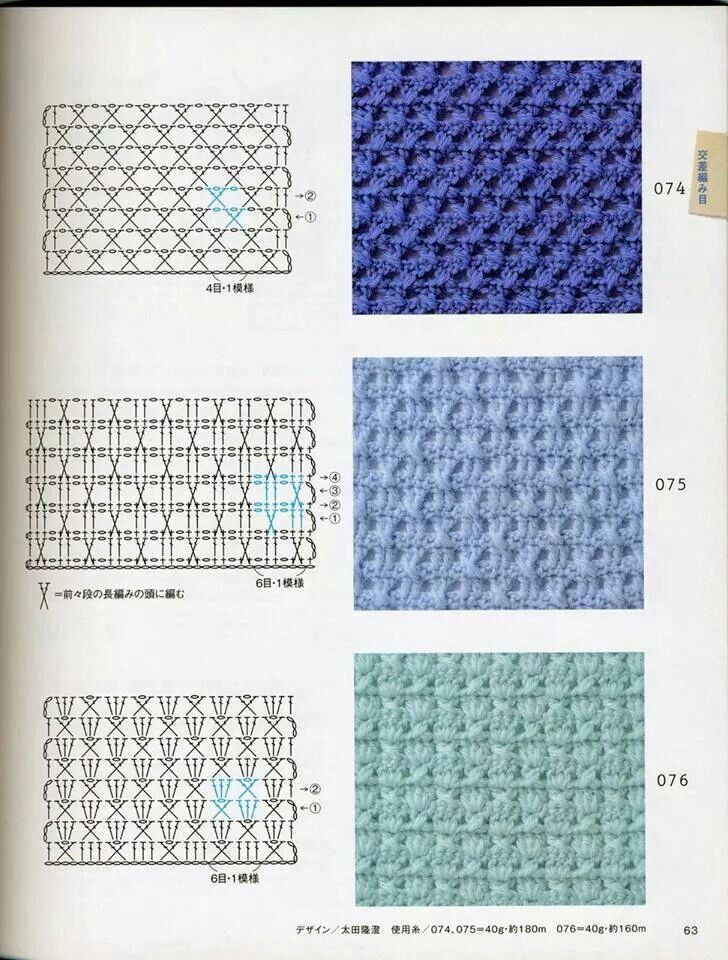
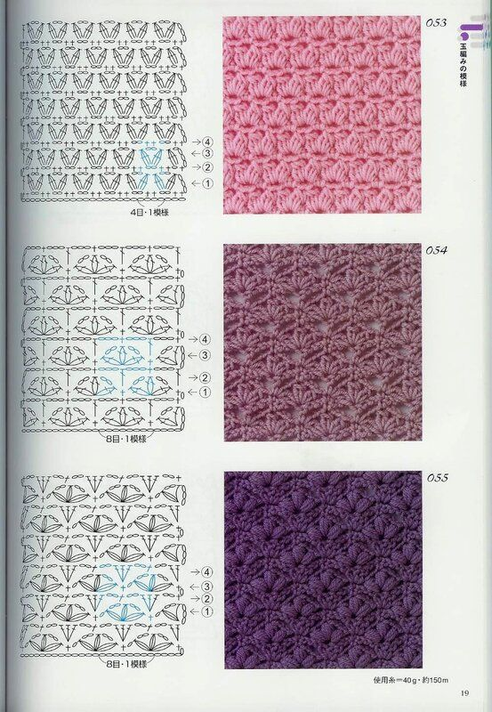
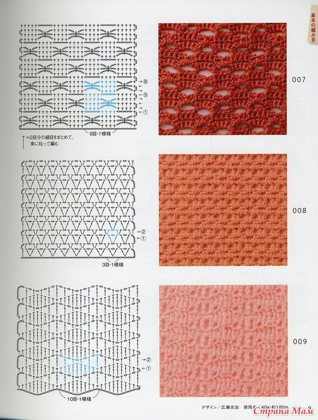
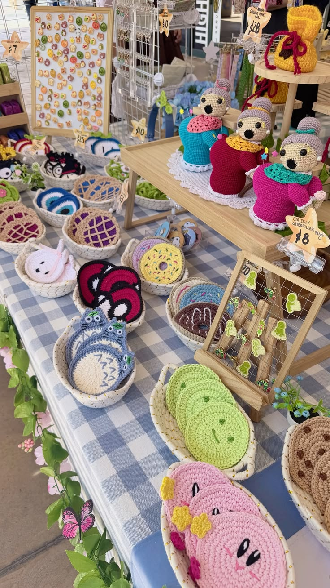

Our Events
Knitting Circle Weekend
Workshop pola tas rajut bersama anggota komunitas. Banyak tips praktis, sesi tanya jawab, dan inspirasi motif baru.
calendar_month 15 Mei 2026Temukan berbagai pola dan panduan merajut untuk membantu menciptakan karya yang indah dan unik.

Kombinasi single crochet dan double crochet secara bergantian yang menghasilkan tekstur seperti anyaman halus. Padat, rapi, dan sangat populer untuk tas maupun selimut.

Pola sederhana yang membentuk deretan bunga tulip kecil dari kombinasi single crochet dan cluster stitch. Teksturnya rapi, manis, dan mudah diingat.

Pola tekstur berbentuk bunga atau kelopak kecil yang tersusun rapat dan berulang. Menghasilkan kain yang padat, dekoratif, dan memiliki tampilan tiga dimensi yang menarik.

Pola tekstur silang kecil yang membentuk efek berlian rapat. Cocok untuk tas, sarung bantal, dan aksesori karena menghasilkan kain yang padat dan kokoh.
Kombinasi tusuk yang menciptakan tekstur kotak-kotak memanjang menyerupai waffle. Memberikan tampilan modern dengan daya serap yang baik.
Motif bintang kecil berulang yang menghasilkan tekstur lembut dan dekoratif. Ideal untuk selimut bayi, syal, atau pakaian rajut.

Pola berbentuk bunga kecil dari susunan shell stitch yang menghasilkan tekstur lembut dan timbul. Cocok untuk selimut bayi, syal, sweater, dan sarung bantal.
Pola kipas bertumpuk yang menciptakan tampilan berlapis seperti sisik atau kelopak bunga. Cocok untuk tas rajut, cardigan, dan selimut.
Pola padat dengan puff stitch yang membentuk efek bunga tiga dimensi. Cocok untuk topi musim dingin, tas, dompet, dan selimut tebal.

Pola shell dengan ruang terbuka di antaranya sehingga terlihat ringan dan berongga. Cocok untuk syal ringan, taplak meja, dan pakaian musim panas.
Pola V-stitch berulang yang menghasilkan tekstur sederhana dan rapi. Pola berbentuk huruf "V" yang tersusun rapat. Cocok untuk selimut, syal, dan atasan rajut.
Pola garis miring bertekstur yang menyerupai anyaman atau rusuk diagonal. Cocok untuk sweater, scarf, dan sarung bantal.
Jelajahi tutorial video dan panduan langkah demi langkah yang membantu kamu menaklukkan setiap pola dengan percaya diri. Cocok untuk pemula dan yang ingin memperdalam teknik merajut.
Lihat event merajut yang telah terlaksana dan gabung bersama komunitas kami untuk join event terbaru yang lebih seru.

Our Events
Workshop pola tas rajut bersama anggota komunitas. Banyak tips praktis, sesi tanya jawab, dan inspirasi motif baru.
calendar_month 15 Mei 2026
Our Events
Ngobrol santai sambil merajut. Peserta berbagi teknik join warna dan finishing yang rapi.
calendar_month 02 Juni 2026